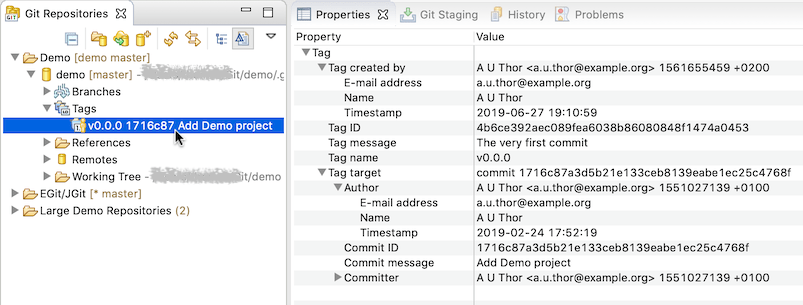
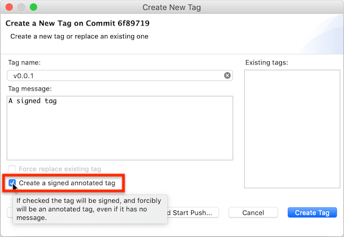
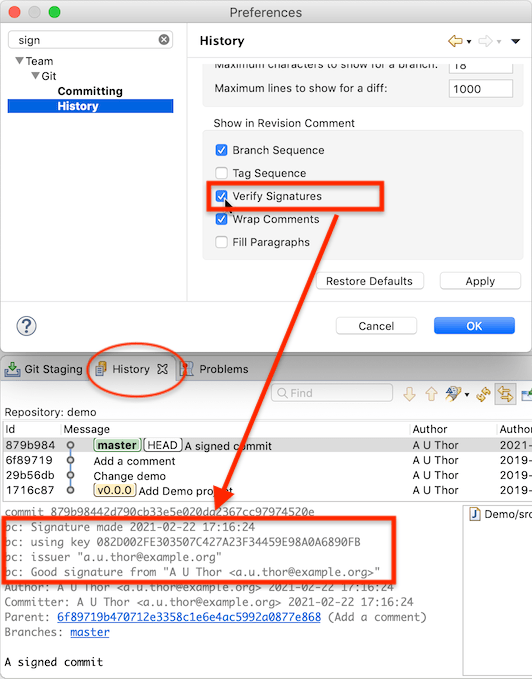
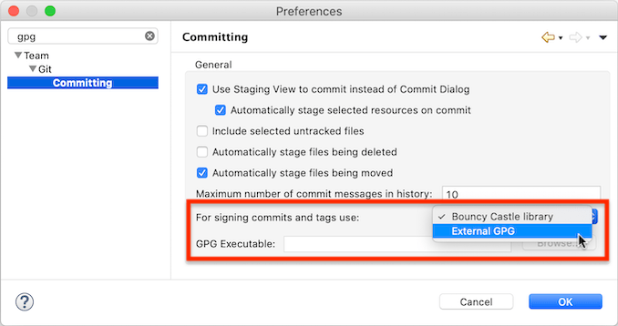

| EGit 5.11 New and Noteworthy | ||
|---|---|---|
|
|
||
| Contributors | ||
The git protocol is the application-layer protocol git uses for communication between a git client and an upstream (git server). It is implemented atop the transport protocol (like HTTPS or SSH). Git has two different protocols for communicating with an upstream. EGit 5.11 by default tries to use the more efficient protocol V2 for fetching and uses the older protocol V0 only if the server does not support protocol V2. Most git servers nowadays do support protocol V2. See also the information about JGit's use of protocol V2.
EGit 5.11 no longer supports the JSch library for SSH connections. By default EGit now always uses the Apache MINA sshd SSH library. The preference setting that allowed users to choose which library to use has been removed.
If environment variable GIT_SSH is set to the path of an SSH executable, EGit uses that external SSH program instead.
As of EGit 5.11, the Eclipse Properties view shows information about a selected tag from the Git Repositories view.

The properties view shows information about the tag itself and also about the git object the tag points to. When the "Tag message" or "Commit message" property is selected, the full message is shown in a focusable pop-up. When the tag target is a commit and is selected, buttons to open the commit in the History view or in the Commit Viewer are shown.
In a similar manner the properties view also shows information about a commit opened in the Commit Viewer when the Commit Viewer is active.
Functionality to sign commits has been available since EGit 5.3. With version 5.11 it is now also possible to create OpenPGP-signed tags:

There is a new checkbox in the "Create Tag..." dialog for creating a signed tag. A signed tag will always be an annotated tag, i.e., a separate tag object recording the creator of the tag, the time the tag was created, and a tag message, even if it is empty. Lightweight tags, which are just git references pointing to a commit, cannot be signed.
The checkbox initially shows the state as determined from the git configuration. There are two options in the git config that govern whether tags are signed. They are tag.gpgSign and tag.forceSignAnnotated, respectively.
The user can override this selection by explicitly checking or unchecking the checkbox.
If git config user.signingKey is set but no matching GPG key can be found, the dialog displays a warning instead of the checkbox.
EGit 5.11 can also verify OpenPGP signatures of commits. If switched on in the Git preferences, EGit will verify commit signatures and show the information in the Git History view:

The information shown is similar to what git log --show-signature shows, but is not identical. EGit uses the Bouncy Castle Java library to verify signatures (even if an external GPG is used to sign commits), so there are minor differences.
Currently EGit only verifies commit signatures. There is no UI (yet) for showing verification information for tag signatures.
EGit by default uses the signing support that is provided by JGit, the Java git library it uses for all git functionality. This uses the Bouncy Castle Java crypto library to find and read GPG keys and to sign commits.
In EGit 5.11, the user also has the option to use the GPG executable installed on the system instead. There are new settings in the Git→Committing preference page:

The user can choose between using the "Bouncy Castle library" or the "External GPG" for signing commits and tags. If "External GPG" is chosen, EGit will launch the GPG executable for signing commits or tags. It finds the GPG executable using the following rules:
Normally it is not necessary to set the path to the GPG executable in the Eclipse preferences. Doing so may help if for some reason the value defined in the git config is not appropriate for Eclipse, or if Eclipse cannot find the GPG executable on the PATH. (On OS X, the PATH for GUI programs started via the Finder is not the same as the PATH in a bash shell, and is typically much shorter. EGit uses the PATH as defined in bash on OS X.)
Note: Eclipse needs a GPG that interacts with the user via GUI dialogs, for instance to ask for a passphrase for a protected GPG key. If GPG is configured to ask for user input in a terminal, Eclipse cannot interact with GPG. In that case, an error dialog is shown with a "Help" button, which links to a help page with some additional hints about where the problem might be and how it might be corrected.
Out of the box, the standard GPG distributions from GnuPG are set up to use GUI dialogs and are thus usable by Eclipse.
When an external GPG executable is used, Eclipse leaves all key handling for signing commits or tags to GPG. GPG will use the gpg-agent, and it will automatically prompt for smartcard PINs or key passphrases, and it may on some systems provide integration with the system's global key chain to avoid repeated passphrase entry. Eclipse and EGit are not involved in any of these steps. EGit only tells GPG what to sign (the raw data of the commit or tag) with which key, identified by git config user.signingKey or the committer's e-mail address, if not set.
EGit 5.11 includes some less noticeable improvements in the UI, plus a number of bug fixes. The complete list of new features and bug fixes is available in the release notes.
|
|
||
| Contributors |